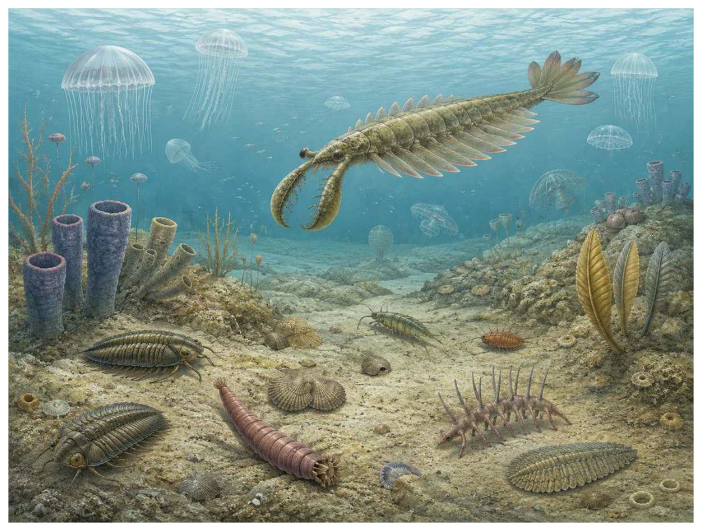

第04篇 · 寒武纪：动物身体方案的大爆发 · 第 11 章
澄江与伯吉斯：寒武纪食物网现场
本篇主题:寒武纪：动物身体方案的大爆发
捕食、感觉、运动和硬组织共同重塑海洋。

本章科学复原配图 （用于呈现结构与生态关系, 不替代化石照片、测量数据与系统发育证据。）
如果把演化树看作不断生长又不断被修剪的枝丛，约5.18亿与5.08亿年前的特异埋藏群是其中关系重新布置的一段。澄江生物群和伯吉斯页岩之所以重要，是因为快速埋藏和特殊化学条件保存了肠道、鳃、眼、附肢甚至神经组织痕迹。普通硬壳化石只能看到生态系统的一部分，而这些窗口揭示大量柔软、微小和难以归类的动物。
进入这个时代
若真正置身其中，首先感受到的是介质本身：水是否含氧、地面是否稳定、空气是否干燥、植被是否遮挡视线。身体结构只有放在这些条件中才有意义。浑浊事件把海底群落迅速掩埋。原本透明柔软的身体被压成薄膜，矿物在组织周围沉淀。数亿年后，研究者不是从完整三维尸体，而是从层层叠加的压片中重建身体。
在“澄江与伯吉斯：寒武纪食物网现场”所覆盖的时间里，不能把地理与气候当作固定背景。海陆位置、海平面、河流或植被结构会改变资源可达性，同一性状在不同地区可能得到完全相反的选择结果。
以澄江与伯吉斯：寒武纪食物网现场为例，演化的单位是种群而不是单个英雄。个体结构影响生存，但地理分布、繁殖速度、幼体死亡率和种群规模决定变异能否保留下来。化石中最醒目的成年骨架，未必是决定支系命运的阶段。 在本章中，这一约束具体落在“滤食者、沉积物摄食者和捕食者形成多层食物网”这条关系上。
再从约5.18亿与5.08亿年前的特异埋藏群的时间尺度看，生态位不是预先摆好的空格，而是生物与环境共同形成的关系。掘穴者改变沉积物，森林固定河岸，礁体构建者制造硬底，巨型植食者改变火与养分。生物占据生态位的同时也在制造新的生态位。 它与“复眼与视觉捕食”共同决定了后续变化可以沿哪些路径发生。
生态系统如何运转
在约5.18亿与5.08亿年前的特异埋藏群，“滤食者、沉积物摄食者和捕食者形成多层食物网”把环境条件转化为生物之间的差异。相同气候并不会平均影响所有支系，因为它们利用的食物、水层、底质和繁殖地点并不相同。
围绕“滤食者、沉积物摄食者和捕食者形成多层食物网”，还要考虑空间异质性。一项在浅海、河谷或林冠有效的策略，移到深水、干旱内陆或开阔地便可能失去优势。因此同一支系常出现区域性扩张，而不是全球同步取代。 对澄江与伯吉斯：寒武纪食物网现场而言，这一后果还会与“浮游和游泳能力扩大水柱生态位”相互放大或抵消。
本章的一条关键关系是“浮游和游泳能力扩大水柱生态位”。它首先改变资源在个体之间的分配：能更早发现、处理或占据资源的种群获得收益，而另一方会承受新的选择压力。
围绕“浮游和游泳能力扩大水柱生态位”，这一机制也会留下间接证据：咬痕、修复伤、足迹密度、粪化石、牙齿磨损和群落年龄结构分别记录不同环节。只有多种证据方向一致，行为解释才应上调可信度。对澄江与伯吉斯：寒武纪食物网现场而言，这一后果还会与“不同埋藏环境决定我们能看到哪些身体”相互放大或抵消。
“不同埋藏环境决定我们能看到哪些身体”体现了生态系统的反馈性。一方结构或行为稍有改变，另一方的防御、逃避、繁殖和空间选择就会重新排列，长期累积后才形成宏观演化差异。
围绕“不同埋藏环境决定我们能看到哪些身体”，从演化树看，相似关系可能在远亲中反复出现。功能相近不必意味着近缘，而同一祖先结构也可能被后代改作完全不同的用途；生态解释必须与系统发育互相校验。 对澄江与伯吉斯：寒武纪食物网现场而言，这一后果还会与“滤食者、沉积物摄食者和捕食者形成多层食物网”相互放大或抵消。
关键演化创新
在“澄江与伯吉斯：寒武纪食物网现场”中，围绕“复眼与视觉捕食”，从共同选择角度看，“复眼与视觉捕食”可能先服务旧功能，后来才参与今天最熟悉的用途。把最终功能倒推成起源原因，会把演化误写成有目的的工程。 它首先需要在约5.18亿与5.08亿年前的特异埋藏群的生态条件下产生可测量收益。
就“复眼与视觉捕食”而言，研究者通过近缘支系比较、发育同源、关节活动、微观组织和出现顺序重建这条路径。真正有价值的过渡化石不是“半成品”，而是证明中间组合可以独立生活。 本章把它与“鳃叶和游泳侧叶”并列，是为了显示复杂性状往往依赖多部分协同。
在“澄江与伯吉斯：寒武纪食物网现场”中，围绕“鳃叶和游泳侧叶”，讨论“鳃叶和游泳侧叶”时，最重要的问题是它解除哪一道限制。只要原有身体在运动、摄食、呼吸或繁殖上受约束，能够稍微缓解约束的变异就可能积累，最终产生看似跃迁的结果。 它首先需要在约5.18亿与5.08亿年前的特异埋藏群的生态条件下产生可测量收益。
就“鳃叶和游泳侧叶”而言，它的成功具有条件性。环境稳定时，专门化可提高效率；危机到来时，同一专门化可能限制食物和栖息地选择。演化创新因此既能开启辐射，也能制造新的脆弱性。 本章把它与“肠道分区”并列，是为了显示复杂性状往往依赖多部分协同。
在“澄江与伯吉斯：寒武纪食物网现场”中，围绕“肠道分区”，从共同选择角度看，“肠道分区”可能先服务旧功能，后来才参与今天最熟悉的用途。把最终功能倒推成起源原因，会把演化误写成有目的的工程。 它首先需要在约5.18亿与5.08亿年前的特异埋藏群的生态条件下产生可测量收益。
就“肠道分区”而言，这一变化还可能在多个支系中独立发生。若功能相似而解剖来源不同，就是趋同；若结构来自共同祖先但功能改变，则属于同源结构的分化。二者不能仅靠外观判断。 本章把它与“复眼与视觉捕食”并列，是为了显示复杂性状往往依赖多部分协同。
生命群像：把物种放回生态网络
抚仙湖虫（Fuxianhuia protensa）
从外形看，抚仙湖虫（Fuxianhuia protensa）最容易被记住的是保存的头部结构和神经系统痕迹帮助讨论节肢动物脑的早期演化。它生活在早寒武世，大小约约几厘米，承担近底活动的节肢动物这一生态功能。把年代、体型和功能放在一起，才能避免把奇特形态当成无意义装饰。
对抚仙湖虫而言，从种群角度看，偶发捕猎和个体伤病远不如长期繁殖率重要。广泛分布的普通个体比一具异常巨大的标本更能代表支系，然而普通个体往往较少进入公众叙事。研究者必须防止把化石收藏偏好误当成古代丰度。 这使“保存的头部结构和神经系统痕迹帮助讨论节肢动物脑的早期演化”不能脱离其近底活动的节肢动物角色来理解。
支持该解释的材料包括神经组织解释需排除矿物膜和腐败结构，部分性状仍有争论。若不同证据出现冲突，应优先报告范围而不是强行给出单值。例如体长会随参照类群变化，运动能力会随软组织假设变化，系统位置也会随新增性状重新计算。
由抚仙湖虫这个案例看，它也展示专门化的双面性：结构在稳定环境中提高效率，却可能在气候、食物或竞争格局突变时限制转向。灭绝不是对设计的道德评分，而是性状、地理范围和偶然事件相遇后的历史结果。 它在早寒武世留下的记录，因此同时是第11章所讨论的形态史和生态史的一部分。
仙掌滇虫（Diania cactiformis）
仙掌滇虫（Diania cactiformis）是早寒武世的一名真实生态成员，而不是通往后代的抽象过渡。它约有约6厘米，以海底爬行叶足动物的方式获取资源；全身具刺、腿部硬化曾被用来讨论节肢附肢起源反映了其祖先历史与局部选择压力共同留下的结果。
对仙掌滇虫而言，把它放回群落后，结构的意义更清楚。食物并不会平均分布，水深、植被高度、底质和季节把资源切成小块；它的身体让其中一部分资源可被利用，也使它与近缘种错开生态位。种群命运还取决于幼体能否成长、繁殖地点是否稳定以及灾害后是否仍有避难所。 这使“全身具刺、腿部硬化曾被用来讨论节肢附肢起源”不能脱离其海底爬行叶足动物角色来理解。
我们之所以能够作出上述判断，主要因为最初提出的腿甲高度硬化解释后来被重新评估。单一结构通常有多种功能解释，所以还要查看磨损、病理、肌肉附着、沉积环境和近缘比较。计算模型能排除不可能姿势，却不能自动恢复没有保存的软组织。
由仙掌滇虫这个案例看，面对仍有争议的细节，负责任的复原不是停止讲述，而是标注证据等级。形态、年代和亲缘可较确定，具体姿势、叫声、求偶和群猎则按材料降级；新标本会在这些边界内继续改写认识。 它在早寒武世留下的记录，因此同时是第11章所讨论的形态史和生态史的一部分。
帽天山虫（Maotianshania cylindrica）
若把镜头从时代拉近到个体，帽天山虫（Maotianshaniacylindrica）会首先进入视野。它生活于早寒武世，体型约厘米级。作为沉积物中钻掘的蠕虫，它依靠具可翻出口吻和钩刺，代表寒武纪底栖掘穴捕食者与环境和其他生物发生关系。
对帽天山虫而言，同域物种的存在迫使它分割时间与空间。相似牙齿不一定吃完全相同的食物，相似四肢也可能适应不同底质；微磨损、同位素和伴生群落常能揭示这种细分。环境改变时，原本减少竞争的专门化又可能成为迁移和改食的障碍。 这使“具可翻出口吻和钩刺，代表寒武纪底栖掘穴捕食者”不能脱离其沉积物中钻掘的蠕虫角色来理解。
其复原依赖软体蠕虫形态易受压扁，种间区别和姿势需大量标本支持。年代和保存形态通常属于较强证据，体重、速度、颜色和社会行为则需要额外假设。书中把这些层次拆开，是为了让读者知道哪些可视为事实，哪些仍应等待更多材料。
由帽天山虫这个案例看，它不是祖先链条上必须跨过的一格。演化树中同时存在许多近缘支系，只有少数留下后代；旁支化石同样关键，因为它们显示某组性状出现的顺序和可行范围。 它在早寒武世留下的记录，因此同时是第11章所讨论的形态史和生态史的一部分。
加拿大虫（Canadia spinosa）
加拿大虫（Canadia spinosa）存在于中寒武世。现有材料显示其大小约约3厘米，生态位置接近海底移动的多毛类。疣足和刚毛显示环节动物式分节与运动让它成为理解本章主题的合适案例，但不意味着同一类群所有成员都采用相同策略。
对加拿大虫而言，它的成功不需要在所有性能上压倒其他物种，只需在特定资源和风险组合中留下更多后代。速度、咬合、装甲、感官与繁殖之间存在预算，某项性能极端化往往意味着另一项被牺牲。所谓“霸主”只是复杂权衡后的区域性结果。这使“疣足和刚毛显示环节动物式分节与运动”不能脱离其海底移动的多毛类角色来理解。
科学家并未直接看见它生活，依据是生活姿态和摄食方式主要由现代多毛类比较推断。现代类比可以帮助提出可检验模型，却不能取代化石；越具体的短时行为，越需要痕迹、内容物或重复病理等直接线索。
由加拿大虫这个案例看，这个案例还提醒我们，亲缘和生态角色是两件事。近亲可以因资源分化而外形迥异，远亲也能因相似压力而趋同。把它放在演化树和食物网两个坐标中，才不会误写成线性进步。 它在中寒武世留下的记录，因此同时是第11章所讨论的形态史和生态史的一部分。
奥托虫（Ottoia prolifica）
在中寒武世，奥托虫（Ottoia prolifica）以约约8厘米的身体参与食物网。它不是孤立的“明星生物”，而是掘穴伏击或吞食小动物；肠内容物、口器和大量标本提供寒武纪捕食证据决定它能利用哪些资源，也决定必须承担哪些成本。
对奥托虫而言，从种群角度看，偶发捕猎和个体伤病远不如长期繁殖率重要。广泛分布的普通个体比一具异常巨大的标本更能代表支系，然而普通个体往往较少进入公众叙事。研究者必须防止把化石收藏偏好误当成古代丰度。 这使“肠内容物、口器和大量标本提供寒武纪捕食证据”不能脱离其掘穴伏击或吞食小动物角色来理解。
证据核心是个别胃内容物不代表整个物种固定食谱。化石记录更擅长回答“结构是什么”，较难回答“每天怎样行动”。足迹、胃内容物、咬痕或胚胎若存在，会显著缩小推测范围；若只有零散骨骼，行为叙述就必须更克制。
由奥托虫这个案例看，它所代表的身体方案后来可能消失，也可能被远亲以不同材料重新发明。生命史因此既有可重复的功能解，也有不可复制的谱系路径。两者结合，才解释现代生物为何既熟悉又偶然。 它在中寒武世留下的记录，因此同时是第11章所讨论的形态史和生态史的一部分。
因果链：环境、生态与性状
从资源入口看，“滤食者、沉积物摄食者和捕食者形成多层食物网”决定能量首先由谁获得，而“浮游和游泳能力扩大水柱生态位”决定能量随后怎样在群落中转移。只有当个体能够借助“复眼与视觉捕食”把资源转化为生长或后代时，形态优势才会成为种群优势。抚仙湖虫与仙掌滇虫分别展示了这条链上的不同位置：前者的保存的头部结构和神经系统痕迹帮助讨论节肢动物脑的早期演化使其偏向近底活动的节肢动物，后者的全身具刺、腿部硬化曾被用来讨论节肢附肢起源则服务于海底爬行叶足动物。这并不意味着二者必然直接竞争；更常见的情况是，它们通过共享资源、改变栖息地或影响共同捕食者而间接连接。把这种间接作用纳入，才看得见澄江与伯吉斯：寒武纪食物网现场不是物种名单，而是一张持续重新分配能量的网络。
“不同埋藏环境决定我们能看到哪些身体”说明环境不是在所有个体身上平均施力。若一个种群分布广、世代较短或能使用多种资源，它可能把一次局部危机吸收到地理和生活史差异之中；若另一个种群依赖狭窄水深、单一植物或特定繁殖场，平时高效的专门化就可能在变化中放大风险。仙掌滇虫和帽天山虫的差异可以用来提出这种比较，但不能仅凭外形宣布谁更适应。真正需要的是地层连续性、地区分布、年龄结构和伴生群落共同告诉我们，哪些性状在澄江与伯吉斯：寒武纪食物网现场的具体条件下转化成了更稳定的繁殖。
如果把澄江与伯吉斯：寒武纪食物网现场当作一次自然实验，可以追问：假如“滤食者、沉积物摄食者和捕食者形成多层食物网”较弱，“鳃叶和游泳侧叶”是否仍会带来同样收益；假如“浮游和游泳能力扩大水柱生态位”更强，抚仙湖虫的保存的头部结构和神经系统痕迹帮助讨论节肢动物脑的早期演化是否反而成为负担。反事实无法直接验证，却能帮助研究者识别模型隐含的因果假设。随后再用元素成像区分碳膜、黄铁矿和黏土替代组织和标本叠压方向与解剖对称性用于复原寻找可区分的预测：不同机制应在体型分布、损伤类型、沉积环境或出现顺序上留下不同痕迹。科学解释不是为现有图景编一个顺耳故事，而是让相互竞争的解释接受同一批材料检验。
“滤食者、沉积物摄食者和捕食者形成多层食物网”与“不同埋藏环境决定我们能看到哪些身体”之间常存在反馈。一个支系改变沉积、植被或猎物数量后，环境会对其自身和其他支系产生新的选择压力；短期收益可能导致长期资源下降，局部工程行为也可能创造此前不存在的栖息地。抚仙湖虫作为近底活动的节肢动物，帽天山虫作为沉积物中钻掘的蠕虫，即使从不直接相遇，也可能经由这种环境改造联系起来。生态系统因此不是静态背景上的竞赛场，而是参与者不断修改规则的动态结构；这正是解释澄江与伯吉斯：寒武纪食物网现场为何会留下长期后果的关键。
亲缘关系为功能解释设定边界。“肠道分区”若在近缘支系中以不同程度出现，最简解释通常是祖先已具备部分结构，后代分别强化或丢失；若远亲在相似生态位中出现相近功能，则需要检查内部解剖是否来自不同材料。抚仙湖虫与帽天山虫可用于演示这一区分：外形近似不自动证明近缘，外形差异也不否定深层同源。把系统发育树、年代和生态证据叠在一起，才能判断澄江与伯吉斯：寒武纪食物网现场中的相似究竟来自共同继承、趋同还是保留的原始特征。
时代横截面：个体、种群与证据
把抚仙湖虫与仙掌滇虫并排观察，可以看到同一时代并不存在唯一正确的身体方案。抚仙湖虫以保存的头部结构和神经系统痕迹帮助讨论节肢动物脑的早期演化参与近底活动的节肢动物，仙掌滇虫则依靠全身具刺、腿部硬化曾被用来讨论节肢附肢起源承担海底爬行叶足动物；两者可能在食物尺寸、活动空间或时间上错开，从而降低直接竞争。若环境改变使这些维度重新重叠，原先共存的支系才可能发生更强替代。比较的目的不是判断谁更先进，而是识别每套结构在哪些条件下有效、在哪些条件下暴露成本。
尺度转换是澄江与伯吉斯：寒武纪食物网现场最容易被忽略的问题。抚仙湖虫的一次摄食、一次移动或一次繁殖属于分钟到季节尺度；种群扩张需要数百至数万年；“复眼与视觉捕食”在演化树上的固定则可能跨越更久。短期观察能够说明结构怎样工作，却不能单独解释支系为何在约5.18亿与5.08亿年前的特异埋藏群扩张。反之，宏观多样性曲线能显示替换，却不能指出每次选择发生在什么身体和生活阶段。把尺度接起来，因果链才完整。
从失败的替代解释出发，能够看见研究如何推进。若把抚仙湖虫简单解释为近底活动的节肢动物，就应检查其保存的头部结构和神经系统痕迹帮助讨论节肢动物脑的早期演化是否真的适合该功能；若另一种功能同样可行，再看磨损、同位素、沉积环境或共存生物能否区分。仙掌滇虫与帽天山虫提供了比较基线，帮助判断某一结构是普遍祖征、特殊适应还是成长阶段差异。结论不是从外观直觉跳出，而是在一系列被排除的可能性之后留下。
本章还可以作为灭绝选择性的预演。若危机首先削弱“滤食者、沉积物摄食者和捕食者形成多层食物网”，依赖该环节的抚仙湖虫可能比外形更脆弱但食物广泛的仙掌滇虫更早衰退；若危机破坏的是繁殖场或幼体环境，成年体型和武器几乎不能提供保护。分布范围、成熟速度、休眠能力与食谱因此要和保存的头部结构和神经系统痕迹帮助讨论节肢动物脑的早期演化、全身具刺、腿部硬化曾被用来讨论节肢附肢起源等显眼结构一起评估。危机筛选的是整套生活史，而不是单项竞技能力。
从保存角度看，抚仙湖虫和仙掌滇虫也可能被化石记录不公平地对待。抚仙湖虫的保存的头部结构和神经系统痕迹帮助讨论节肢动物脑的早期演化若包含坚硬、容易辨认的部分，就更可能被采集和命名；仙掌滇虫若身体柔软、个体小或生活在侵蚀环境，真实丰度可能被严重低估。元素成像区分碳膜、黄铁矿和黏土替代组织能补充一部分信息，标本叠压方向与解剖对称性用于复原又提供另一尺度的限制。只有先问“什么容易被保存”，再问“什么当时常见”，才不会把博物馆展柜的比例误当成古生态比例。
科学家为什么这样判断
围绕“元素成像区分碳膜、黄铁矿和黏土替代组织”，高可信结论通常来自独立方法一致。例如形态暗示某种食性时，微磨损、同位素或胃内容物若给出相同方向，解释便更稳固；若结果冲突，就应保留生态弹性或地区差异。
证据条目“标本叠压方向与解剖对称性用于复原”的作用，是把肉眼可见的化石转化为可检验结论。研究者先确认样品的层位和成岩历史，再测量结构、比较近缘种并建立替代模型；若解释只在一套参数下成立，就不能写成唯一事实。
使用“多个个体和生长阶段减少单一标本误读”时必须处理保存偏差。坚硬组织、低氧埋藏和火山灰覆盖更容易留下记录，岩层出露与采集历史又决定样本数量。统计分析通常要校正这些不均匀性，避免把采样强度当作真实多样性。
在“澄江与伯吉斯：寒武纪食物网现场”这一问题上，把上述方法合在一起，研究者才能从残缺材料走向受约束的复原。任何一条证据都可能受到成岩、污染、样本量或现代类比的限制；结论越具体，越需要多条独立证据指向同一方向，并与约5.18亿与5.08亿年前的特异埋藏群的地层背景相容。
过去的图景与今天的证据
精美化石并不等于行为可以直接观看。眼睛提示视觉能力，胃内容物提示一次进食，但群居、繁殖和捕猎方式仍多为合理推测。复原图必须标注证据等级。
围绕“澄江与伯吉斯：寒武纪食物网现场”，争议持续还因为不同问题需要不同尺度。个体生物力学、种群生态和全球气候模型无法互相替代；一个模型能解释骨骼受力，不等于已经解释整个支系为何扩张或灭绝。
对约5.18亿与5.08亿年前的特异埋藏群的材料而言，需要特别警惕新闻标题把“可能”“支持”改写成“已经证明”。古生物学很少能直接观察行为，越接近颜色、叫声、群居和捕猎策略，越应说明样本数量与替代解释。
跨尺度观察
生态工程：生物不是被动放在环境里。根系、礁体、洞穴、粪便和迁徙都会改变水流、土壤、养分与栖息地结构。工程效应一旦扩散，后续物种面对的环境已经是前一批生命共同建造的。 在“澄江与伯吉斯：寒武纪食物网现场”中，这一尺度具体连接了“滤食者、沉积物摄食者和捕食者形成多层食物网”与“复眼与视觉捕食”，因而不能只从单个成年标本判断。
发育约束：自然选择修改的是已有胚胎程序。骨骼顺序、身体轴线和组织材料限制可出现的变化，所以远亲面对同一问题时会以不同部件实现相似功能。过渡化石的镶嵌特征正是发育模块可部分独立变化的结果。 在“澄江与伯吉斯：寒武纪食物网现场”中，这一尺度具体连接了“浮游和游泳能力扩大水柱生态位”与“鳃叶和游泳侧叶”，因而不能只从单个成年标本判断。
灭绝选择性：危机不会随机删除名单。分布狭窄、食性单一、体型大、成熟慢或依赖特定栖息地的支系往往风险更高，但每次事件的杀伤机制不同，规律只能作为概率而非绝对法则。 在“澄江与伯吉斯：寒武纪食物网现场”中，这一尺度具体连接了“不同埋藏环境决定我们能看到哪些身体”与“肠道分区”，因而不能只从单个成年标本判断。
通向下一个时代
从本章走向下一阶段时，需要保留的不是一串物种名，而是一个因果链：环境改变可用能量与栖息地，生态关系筛选性状，性状又反过来改造环境。寒武纪生态创新进一步推动防御、运动和感觉器官升级。下一章把镜头聚焦于装甲、眼睛和演化军备竞赛。
本章精选来源
- [R25] Shore, A. J. et al. Ediacaran metazoan reveals lophotrochozoan affinity and deepens root of Cambrian explosion. Science Advances 7, eabf2933 (2021).
- [R26] Budd, G. E. & Jensen, S. A critical reappraisal of the fossil record of the bilaterian phyla. Biological Reviews 75, 253-295 (2000).
- [R27] Hou, X.-G. et al. The Cambrian Fossils of Chengjiang, China: The Flowering of Early Animal Life, 2nd ed. Wiley Blackwell, 2017.
- [R28] Briggs, D. E. G., Erwin, D. H. & Collier, F. J. The Fossils of the Burgess Shale. Smithsonian Institution Press, 1994.
- [R29] Paterson, J. R. et al. Acute vision in the giant Cambrian predator Anomalocaris and the origin of compound eyes. Nature 480, 237-240 (2011).